RECALL - There Are 3 Types of Muscle Tissues
| Feature | Skeletal | Smooth | Cardiac |
|---|---|---|---|
| Location | Attached to | Walls of hollow organs and vessels; eyes, glands, and skin | |
| Appearance | Long, cylindrical, cells; many nuclei | Spindle-shaped; striations | Striated, cells |
| Control | |||
| Functions | Locomotion, facial expressions, , and respiratory movements | Propel urine, churn food, dilate pupils, regulate flow | Pump throughout the body |
Muscle Histology
| Level | What it contains/how it is organized | Connective-tissue covering |
|---|---|---|
| Whole muscle | Many muscle plus blood vessels and nerves | |
| Fascicle | A bundle of muscle | |
| Muscle fiber | One muscle containing myofibrils | |
| Myofibril | A long bundle organized into repeating | Not one of the three coverings above |
| Myofilaments | Protein filaments: thin and thick | Within sarcomeres |
Label the muscle below as displayed on the board
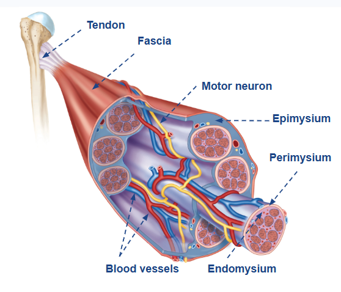
Muscle Tissue Has 4 Functional Properties
| Property | Complete the meaning |
|---|---|
| Contractility | Ability to generate ; often produces shortening. |
| Excitability | Ability to respond to an electrical from a nerve. |
| Extensibility | Ability to be beyond resting length without damage. |
| Elasticity | Ability to to resting length after being stretched. |
We Need to ZOOM IN to the…
A is the smallest functional contractile unit of a muscle fiber; each fiber contains thousands.
One sarcomere extends from one disk to the next. These boundaries anchor thin filaments.
The central line anchors thick filaments. During shortening, Z disks move toward the center; during relaxation, they move farther apart.
Bands and Zones of Sarcomere
| Region | Filaments/landmark | Change during shortening |
|---|---|---|
| H zone | Central region; only; includes M line. | Gets |
| A band | Entire length of thick filaments; includes zones of actin-myosin . Dark band. | Length stays |
| I band | Thin only; includes the Z disk. Light band. | Gets |
Label the sarcomere below as displayed on the board
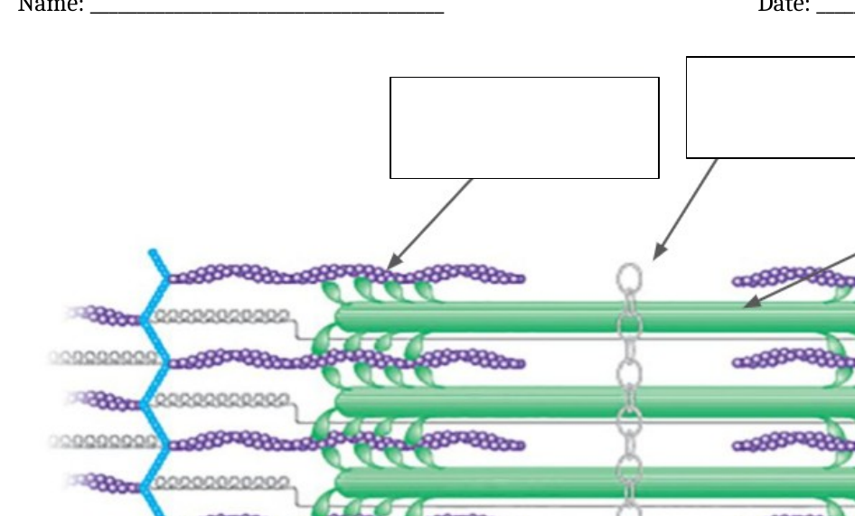
Myofilaments in More Detail…
| Structure | Role |
|---|---|
| Actin (thin filament) | Two strands form a double . G-actin units have active sites for binding. |
| Tropomyosin | Long regulatory protein that covers actin’s sites in a relaxed muscle. |
| Troponin | Binds ions; shifts tropomyosin so binding sites become exposed. |
| Myosin (thick filament) | Heads bind actin and act as enzymes, breaking ATP into ADP + phosphate. |
How Does Myosin Pull on Actin to Create Contraction?
Cross-bridge movement is also called the filament model. The filaments slide past one another; their individual lengths do not shorten.
| Step | Complete the event |
|---|---|
| 1. Expose active sites | binds troponin; tropomyosin moves away from G-actin binding sites. |
| 2. Cross-bridge formation | Energized heads attach to exposed actin sites. |
| 3. Power stroke | Myosin heads pivot, pulling actin and attached Z disks toward the line. |
| 4. Cross-bridge release | A new binds myosin, causing it to detach from actin. |
| 5. ATP hydrolysis | ATP is broken into + phosphate; energy is transferred to the myosin head. |
| 6. Recovery stroke | The head returns to its -energy position and can bind farther along actin. |
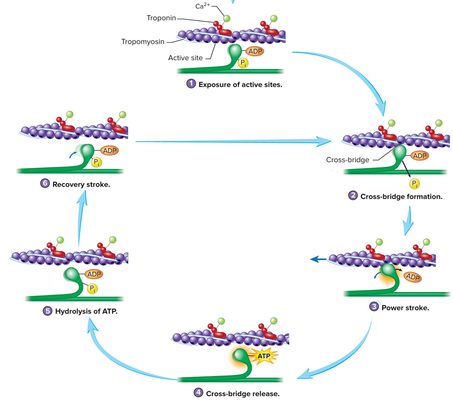
What Is a Muscle Fiber?
Muscle fibers are very long cells containing multiple and many for ATP production.
Growth by enlargement of existing fibers is called ; it does not primarily mean adding new muscle cells.
| General cell structure | Muscle-specific name | Function/detail |
|---|---|---|
| Cytoplasm | Contains myofibrils, mitochondria, glycogen, and myoglobin. | |
| Plasma membrane | Carries the electrical signal across the cell surface. | |
| Inward folds of the membrane | Carry the signal into the fiber’s interior. | |
| Specialized smooth ER | Stores and releases ions. | |
| Contractile organelles | Myofibrils | Long chains of repeating . |
Pause! What We Know / How Do We Open the Ca2+ Channels?
Ions need protein to cross membranes. Leaky channels remain open; channels open only under certain conditions.
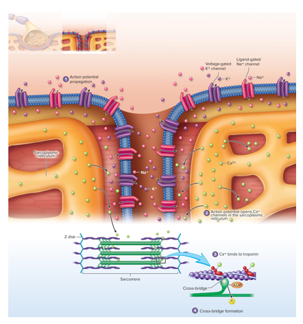
Ligand-gated channels respond to a binding ; voltage-gated channels respond to a change in electrical .
An action potential is a rapid electrical impulse that travels along an excitable cell’s membrane. In a muscle fiber it spreads along the and down the .
The T-tubule voltage signal triggers SR calcium-release channels to open near the terminal . Calcium diffuses from the SR into the .
Released calcium binds , exposing actin’s binding sites and enabling cross-bridge cycling. Linking excitation to contraction is called coupling.
How Does the Action Potential Get to the Muscle Fiber?
A neuron sends action potentials along its long to its axon .
A neuron that stimulates skeletal muscle is a neuron. Its communication site with a muscle fiber is the junction (NMJ).
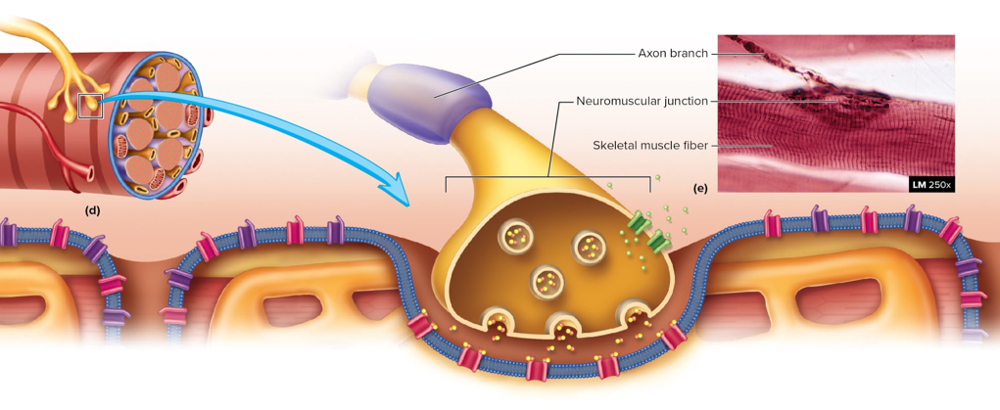
The Neuromuscular Junction (NMJ)
| Event | Complete the sequence |
|---|---|
| 1. Signal arrives | An action potential reaches the motor neuron’s presynaptic . |
| 2. Calcium enters | Voltage-gated channels open in the terminal membrane. |
| 3. Messenger released | Synaptic vesicles fuse with the membrane and release (ACh). |
| 4. Receptor activated | ACh crosses the synaptic and binds ligand-gated receptors on the motor end plate. |
| 5. Muscle depolarizes | Channels open; net entry of produces depolarization that triggers a muscle action potential. |
| 6. Signal ended | breaks down ACh; its components can be recycled and ligand-gated channels close. |
The motor end plate is the specialized postsynaptic region of the muscle fiber’s .
Keep the locations straight: Where does calcium enter the neuron, and where is calcium released inside the muscle fiber?
Muscular System Part I as a “Storyline”
Complete the connecting terms, then explain the sequence aloud without looking at the previous pages.
| Where? | Sequence to complete |
|---|---|
| At the NMJ | Motor-neuron action potential → terminal enters → vesicles release → transmitter crosses the cleft → receptors open → enters the muscle fiber → muscle action potential. |
| Inside the fiber | Sarcolemma → → SR releases into sarcoplasm → binds → tropomyosin shifts → actin sites exposed. |
| At the sarcomere | Cross-bridge → power toward M line → ATP binding detaches the head → ATP → recovery stroke; cycle repeats while calcium and ATP are available. |
What Is a Motor Unit?
A motor unit consists of one neuron and of the muscle fibers it innervates. One neuron can have many axon terminals and stimulate multiple fibers.
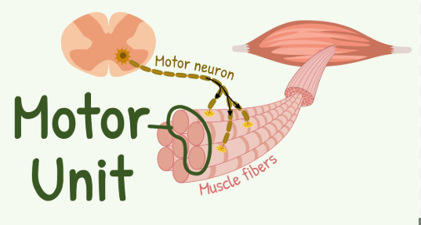
What Happens AFTER a Muscle Contracts?
The motor neuron stops releasing ACh; remaining ACh is broken down by .
Ligand-gated channels close; continued sodium entry stops. Potassium exits through channels as the membrane returns toward its resting charge.
Calcium is pumped from sarcoplasm back into the . Moving it against its concentration gradient is transport and requires .
Calcium leaves troponin; covers the actin sites again. Cross-bridge cycling stops and the muscle can return toward resting length.
There Are 2 Types of Muscle Contractions
| Feature | Isometric | Isotonic |
|---|---|---|
| Muscle length | Remains approximately | Changes as the muscle moves a load |
| Tension / load | Tension develops without appreciable shortening | Tension is relatively steady against a given load |
| Joint movement | ||
| Slide example | a dumbbell still | a dumbbell |
| Application | Posture and joint | Movement; the shortening phase is concentric |
During a controlled lowering phase, a contracting muscle can lengthen (eccentric contraction). Muscle contraction means active tension production; it does not always mean shortening.
What Factors Affect the Force of a Muscle Contraction?
| Factor | Relationship to force | Apply the idea |
|---|---|---|
| Motor-unit recruitment | More activated motor units generally produce force. | A heavier load requires recruitment of motor units. |
| Frequency of stimulation | More frequent action potentials can increase force because twitches . | Closely spaced signals leave less time for relaxation. |
| Fiber size / starting length | Larger fibers can generate more force; an starting length gives effective filament overlap. | Too much shortening or stretching reduces useful cross-bridge overlap. |
ATP: More Than One Job
ATP binding causes myosin to from actin.
ATP hydrolysis supplies energy to reset the myosin head to its position.
ATP powers the calcium that returns calcium to the SR during relaxation.
Check: Why does holding a weight still still require active muscle contraction?
How Do We Make the ATP Needed for Contraction and Relaxation?
| Pathway | Fuel/mechanism | Oxygen and approximate duration |
|---|---|---|
| Creatine phosphate | Donates a to ADP to rapidly regenerate ATP; stores are small. | No direct O2 requirement; about seconds in the slide. |
| Anaerobic glycolysis | Muscle or blood glucose supplies glucose. Glycolysis yields net ATP per glucose and pyruvate; lactate can form and enter the blood. | Does not require O2; about minutes in the slide. |
| Aerobic respiration | Uses pyruvate, fatty acids, and sometimes amino acids; major stages occur in the . Products include ATP, CO2, water, and heat. | Requires ; several minutes to hours. About - ATP per glucose in the slide. |
These pathways overlap during activity; the durations describe approximate contributions rather than strict switches from one system to another.
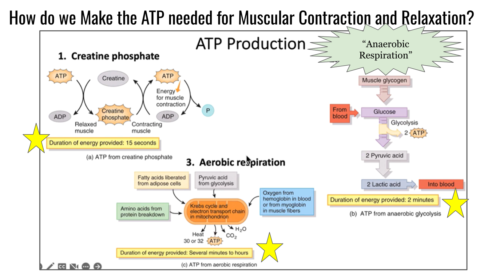
Myoglobin and Exercise
is an oxygen-binding protein inside muscle fibers; it has a higher oxygen affinity than hemoglobin.
It acts as an oxygen and supports respiration as oxygen demand increases.
Skeletal Muscle Anatomy (Zooming OUT)
A whole muscle is an because it contains multiple tissue types: muscle, connective, and tissue, plus its blood supply.
A is a bundle of muscle fibers. A muscle fiber is one long, multinucleated .
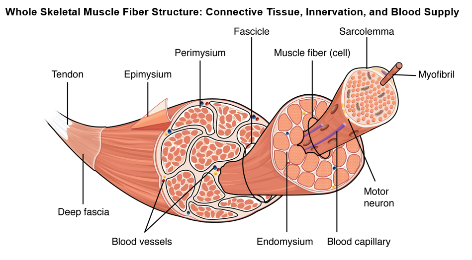
| Structure | Surrounds/connects | Memory cue or distinction |
|---|---|---|
| Epimysium | Entire | Epi = outer / over |
| Perimysium | Each | Peri = around a bundle |
| Endomysium | Each individual muscle | Endo = within |
| Deep fascia | Surrounds / separates muscles and muscle groups | Connective-tissue support |
| Tendon | Connects muscle to | Cordlike dense connective tissue |
| Aponeurosis | Broad, flat connective-tissue attachment | A sheetlike |
Muscle Twitch, Tetanus, & Muscle Tone
| Term | Complete the definition |
|---|---|
| Muscle twitch | A single, brief contraction in response to one . |
| Tetanus | A sustained contraction produced by repeated, stimulation; individual twitches merge. |
| Incomplete / unfused tetanus | Some occurs between stimuli. |
| Complete / fused tetanus | No visible relaxation occurs between twitches; tension is sustained. |
| Muscle tone | Continuous, -level tension that helps maintain posture. |
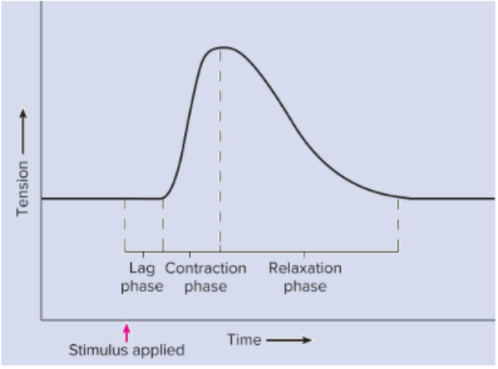
| Twitch phase | What happens/response |
|---|---|
| Lag / latent phase | Time between the stimulus and the rise in . |
| Contraction phase | Cross-bridge activity increases tension; the curve moves . |
| Relaxation phase | Calcium returns to the SR and tension . |
Muscle tone helps keep the back and lower limbs straight, the head , and the abdomen supported.
Muscle Structure & Contraction Vocabulary
Use these short retrieval prompts to review the starred vocabulary slides. Complete each without copying a full definition.
| Term | Meaning/function |
|---|---|
| Fascicle | A bundle of skeletal muscle surrounded by perimysium. |
| Skeletal muscle fiber | One elongated, muscle cell. |
| Myofibril | Long contractile organelle made of repeating . |
| Sarcomere | Functional contractile unit between two disks. |
| Z disk / Z line | Boundary that anchors filaments. |
| M line | Central landmark that anchors filaments. |
| Sarcolemma | Muscle fiber’s cell . |
| Sarcoplasm | Muscle fiber’s ; contains mitochondria, myoglobin, and glycogen. |
| Sarcoplasmic reticulum (SR) | Specialized ER that stores and releases . |
| Transverse (T) tubules | Inward folds of the sarcolemma that carry deep into the fiber. |
| Myofilaments | Protein filaments, mainly and , that slide past one another. |
| Actin | filament with active sites for myosin. |
| Myosin | filament with heads that attach to actin. |
| Tropomyosin | Covers actin’s at rest. |
| Troponin | Binds and shifts tropomyosin. |
| Active site | Location on where a myosin head binds. |
| Cross-bridge | Physical connection between and . |
| Power stroke | Myosin head pivots and pulls actin toward the . |
| Titin | Elastic protein linking thick filaments toward the disk; provides stability and elasticity. |
Diagram and Sequence Practice
Use the final diagrams in the slideshow for a retrieval check. Write directly on the figure or use the response space.
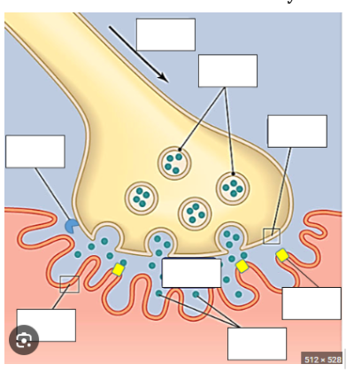
| Location/ structure | Identify |
|---|---|
| Presynaptic terminal | The incoming action potential opens channels. |
| Synaptic cleft | The neurotransmitter crossing this space is . |
| Muscle sarcolemma | Net entry starts depolarization. |
| Green dots in slide 53 | They represent . |
| Yellow structure in slide 53 | It is the of the motor neuron. |
Put It Together
Smallest to largest: calcium ion, myosin filament, sarcomere, myofibril, muscle fiber. Answer:
Predict what happens to cross-bridge formation if calcium stays inside the SR. Answer:
Explain why ATP is needed for both contraction and relaxation. Answer: Sarcomere Labeling
Label the structures on the diagram
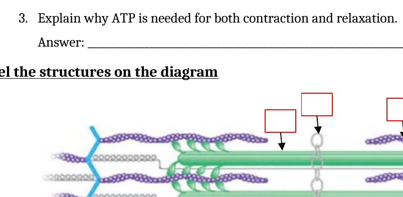